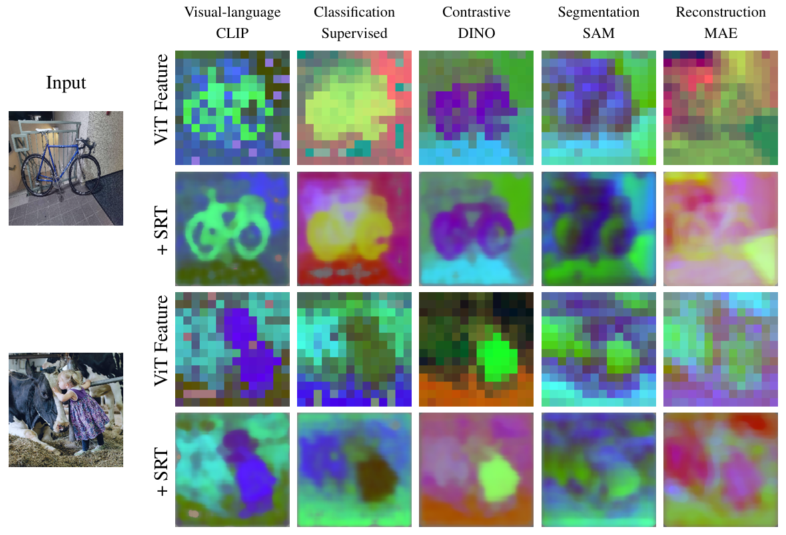
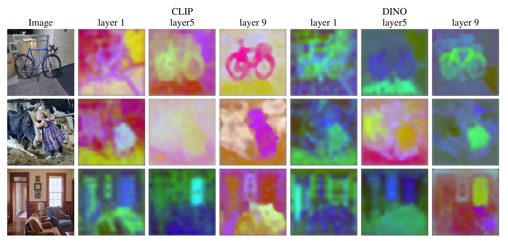
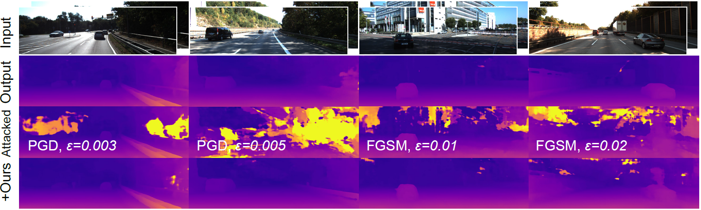
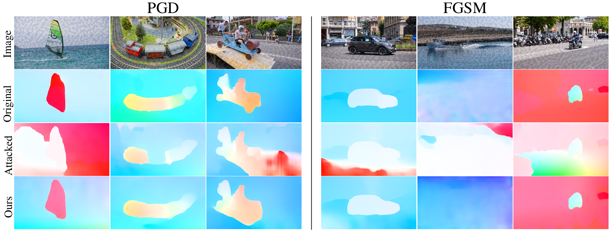

Shake your image, boost your performance.
Stochastic resonance is a counterintuitive signal processing principle: by adding a small amount of noise, one can reveal information that would otherwise be lost below a quantization or aliasing threshold. In hearing aids, for example, stochastic resonance helps make discretized digital audio more intelligible: introducing white noise into cochlear implants can enhance the perception of sub-threshold signals.
In vision, we encounter analogous forms of aliasing. Some are intentional, such as the patch tokenization used in Vision Transformers, and others are unintentional, arising from spatial downsampling. Rectangular tokens and coarse pooling disrupt the natural continuity of images, producing an artificial “grid” that does not exist in the real world.
Our approach introduces carefully controlled noise by slightly perturbing (shaking) the image, generating multiple subtly misaligned views. These are then realigned and aggregated in latent space, allowing the model to recover fine-grained details beyond its nominal resolution. In effect, stochastic resonance transforms noise from a nuisance into a signal, turning perturbations into a tool for enhancing visual perception.
At its core, our method is simple: we shake the image to introduce tiny translations, compute features for each perturbed view, undo the translations in the latent space, and average the results. These micro‑translations act as purposeful noise that generates different “looks” at the same scene. For ViTs we apply perturbations at a sub‑token scale, aligning and averaging features to build richer embeddings (see Backstory for how this idea emerged). The entire procedure happens at test time and requires no training or network modifications. It is agnostic to architecture and to the choice of layer where ensembling occurs. Imagine looking through a set of iron bars that break your view into coarse grids. A small head movement causes the same object to appear in different slots. When these shifted perspectives are aligned back in latent space, they reassemble into fine-grained latent representations.
We first explored this idea in the context of Vision Transformer tokenization. By ensembling sub‑token perturbations, we improved segmentation, classification, and depth estimation by up to 14.9% without any fine‑tuning. A naive implementation could be prohibitively slow and memory hungry: imagine sizing up a feature map, and doing it for dozens of shifts, but our implementation computes all shifts in parallel and folds them back efficiently, without having to compute the spatial upsampling. The result is both fast and lightweight, turning stochastic resonance into a practical tool.
Encouraged by these results, we asked whether “combating noise with noise” could defend against adversarial perturbations. We streamlined the theory and extended the framework beyond ViT architectures, introducing the first test‑time defense that works across classification and dense prediction tasks. By adding small translations and aggregating the transformed embeddings, we recover up to 68.1 % of the accuracy lost to adversarial attacks on images, 71.9% on stereo matching, and 29.2% on optical flow. We further investigated ensembling across different network layers and introduced rotation-based perturbations to identify effective strategies for improving adversarial robustness.
Significant Findings:
Stochastic Resonance enables enhancing tokenized ViT features during inference without the need for additional training or modifying ViT forward pass. Here we present enhanced features from different pre-trained ViT models, visualized via Principal Component Analysis:
Deeper layers reveal clearer high-level semantic boundaries, while shallower layers highlight more local features compared to high-level ones:
By incorporating stochastic resonance, we demonstrate a significant reduction in prediction errors on stereo matching. This technique holds significant potential for improving robustness in safety-critical real-world applications, such as autonomous driving, where stereo vision must remain reliable under diverse environmental conditions and adversarial threats:
Qualitative results on optical flow (visualized with a color wheel) show that our method substantially mitigates the degradation caused by both PGD and FGSM attacks. This robustness is particularly relevant for visual perception systems that rely on accurate motion estimation:
To be updated.
Our exploration of stochastic resonance began with a simple frustration: the coarse “grid” imposed by vision transformers and the quantization artifacts that come with it. Discretizing an image into large tokens destroys fine spatial details and disrupts natural regularities. We wanted a solution that was simple, principled, and broadly applicable. We want to avoid the need to train a separate correction module for every architecture.
In 2023, we happened to be working on two seemingly unrelated projects. One focused on atmospheric turbulence, where we discovered that registering distorted frames into a common coordinate system allows multiple noisy images to be combined into a reconstruction sharper than any single frame (a result later highlighted at CVPR 2024). The other, AugUndo, reversed geometric augmentations by warping predictions back to the original frame, enabling a wide range of augmentations while preserving geometric consistency.
These experiences converged on a surprisingly elegant idea: introduce small, deterministic sub-token translations, align the resulting embeddings, and aggregate them. Initially, we treated this as a visualization tool for studying ViT embeddings, but the results were unexpectedly strong: producing smoother, more detailed representations. What began as a side experiment and feature visualization toy evolved into a general ensemble mechanism, forming the foundation of the Stochastic Resonance Transformer (SRT).
We later realized that adversarial attacks can be viewed as another form of “turbulence.” By inducing small translations at inference and aggregating features in latent space, we found that pre‑trained vision models can be improved at test time without any fine-tuning, but simply by scaling up computation through stochastic resonance. This turned into a form of test-time scaling, opening a new direction for enhancing robustness and performance in existing models.
The research is ongoing. Stay tuned!
We propose a test-time defense mechanism against adversarial attacks: imperceptible image perturbations that significantly alter the predictions of a model. Unlike existing methods that rely on feature filtering or smoothing, which can lead to information loss, we propose to "combat noise with noise" by leveraging stochastic resonance to enhance robustness while minimizing information loss. Our approach introduces small translational perturbations to the input image, aligns the transformed feature embeddings, and aggregates them before mapping back to the original reference image. This can be expressed in a closed-form formula, which can be deployed on diverse existing network architectures without introducing additional network modules or fine-tuning for specific attack types. The resulting method is entirely training-free, architecture-agnostic, and attack-agnostic. Empirical results show state-of-the-art robustness on image classification and, for the first time, establish a generic test-time defense for dense prediction tasks, including stereo matching and optical flow, highlighting the method's versatility and practicality. Specifically, relative to clean (unperturbed) performance, our method recovers up to 68.1% of the accuracy loss on image classification, 71.9% on stereo matching, and 29.2% on optical flow under various types of adversarial attacks.
Vision Transformer (ViT) architectures represent images as collections of high-dimensional vectorized tokens, each corresponding to a rectangular non-overlapping patch. This representation trades spatial granularity for embedding dimensionality, and results in semantically rich but spatially coarsely quantized feature maps. In order to retrieve spatial details beneficial to fine-grained inference tasks we propose a training-free method inspired by "stochastic resonance." Specifically, we perform sub-token spatial transformations to the input data, and aggregate the resulting ViT features after applying the inverse transformation. The resulting "Stochastic Resonance Transformer" (SRT) retains the rich semantic information of the original representation, but grounds it on a finer-scale spatial domain, partly mitigating the coarse effect of spatial tokenization. SRT is applicable across any layer of any ViT architecture, consistently boosting performance on several tasks including segmentation, classification, depth estimation, and others by up to 14.9% without the need for any fine-tuning.
Unsupervised depth completion and estimation methods are trained by minimizing reconstruction error. Block artifacts from resampling, intensity saturation, and occlusions are amongst the many undesirable by-products of common data augmentation schemes that affect image reconstruction quality, and thus the training signal. Hence, typical augmentations on images viewed as essential to training pipelines in other vision tasks have seen limited use beyond small image intensity changes and flipping. The sparse depth modality in depth completion have seen even less use as intensity transformations alter the scale of the 3D scene, and geometric transformations may decimate the sparse points during resampling. We propose a method that unlocks a wide range of previously-infeasible geometric augmentations for unsupervised depth completion and estimation. This is achieved by reversing, or ``undo''-ing, geometric transformations to the coordinates of the output depth, warping the depth map back to the original reference frame. This enables computing the reconstruction losses using the original images and sparse depth maps, eliminating the pitfalls of naive loss computation on the augmented inputs and allowing us to scale up augmentations to boost performance. We demonstrate our method on indoor (VOID) and outdoor (KITTI) datasets, where we consistently improve upon recent methods across both datasets as well as generalization to four other datasets.
We describe a method for recovering the irradiance underlying a collection of images corrupted by atmospheric turbulence. Since supervised data is often technically im-possible to obtain, assumptions and biases have to be im-posed to solve this inverse problem, and we choose to model them explicitly. Rather than initializing a latent irradiance (“template”) by heuristics to estimate deformation, we se-lect one of the images as a reference, and model the de-formation in this image by the aggregation of the optical flow from it to other images, exploiting a prior imposed by Central Limit Theorem. Then with a novel flow inversion module, the model registers each image TO the template but WITHOUT the template, avoiding artifacts related to poor template initialization. To illustrate the robustness of the method, we simply (i) select the first frame as the ref-erence and (ii) use the simplest optical flow to estimate the warpings, yet the improvement in registration is decisive in the final reconstruction, as we achieve state-of-the-art per-formance despite its simplicity. The method establishes a strong baseline that can be further improved by integrating it seamlessly into more sophisticated pipelines, or with domain-specific methods if so desired.
@article{lao2025adversarial,
title={Test-Time Defense Against Adversarial Attacks via Stochastic Resonance of Latent Ensembles},
author={Lao, Dong and Zhang, Yuxiang and Ehsani Oskouie, Haniyeh and Wu, Yangchao and Wong, Alex and Soatto, Stefano},
journal={arXiv preprint},
year={2025}
}
@inproceedings{lao2024sub,
title={Sub-token ViT Embedding via Stochastic Resonance Transformers},
author={Lao, Dong and Wu, Yangchao and Liu, Tian Yu and Wong, Alex and Soatto, Stefano},
booktitle={International Conference on Machine Learning},
pages={25995--26006},
year={2024},
organization={PMLR}
}
@inproceedings{wu2024augundo,
title={Augundo: Scaling up augmentations for monocular depth completion and estimation},
author={Wu, Yangchao and Liu, Tian Yu and Park, Hyoungseob and Soatto, Stefano and Lao, Dong and Wong, Alex},
booktitle={European Conference on Computer Vision},
pages={274--293},
year={2024},
organization={Springer}
}
@inproceedings{lao2024diffeomorphic,
title={Diffeomorphic template registration for atmospheric turbulence mitigation},
author={Lao, Dong and Wang, Congli and Wong, Alex and Soatto, Stefano},
booktitle={Proceedings of the IEEE/CVF Conference on Computer Vision and Pattern Recognition},
pages={25107--25116},
year={2024}
}
Assistant Professor
LSU (previously at UCLA)
Undergraduate Student
UCLA
Graduate Student
UCLA
Graduate Student
UCLA
Postdoc
Princeton
Graduate Student
Yale
Graduate Student
Waymo (previously at UCLA)
Assistant Professor
Yale
Professor
UCLA & AWS